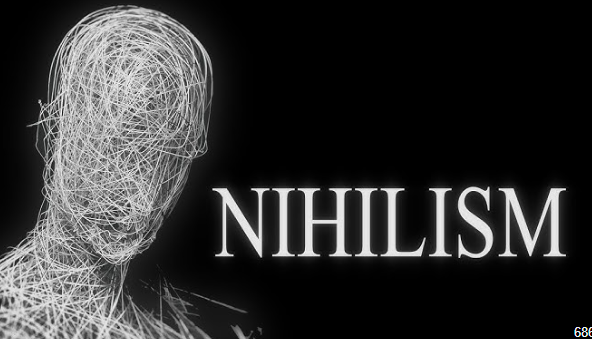
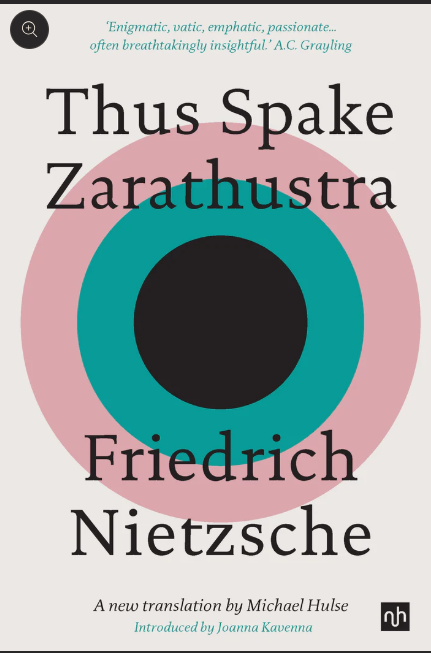
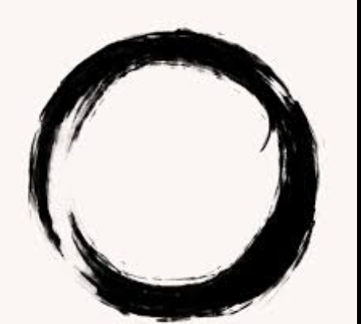

|  |
"The absurd is the essential concept and the first truth." -Albert Camus Home Contact Services Portfolio |
|
| Home_page | ||
|

Nihilism is a philosophical viewpoint that suggests life lacks inherent meaning, purpose, or value. It often challenges traditional beliefs and questions the existence of absolute truths.Nihilism, in general, is the belief that life lacks inherent meaning, purpose, or value. Nietzsche recognized the growing nihilism in Western society due to the decline of traditional religious and moral values, famously declaring that "God is dead." This proclamation reflects his observation of the loss of faith in the old moral and metaphysical frameworks. Nietzsche believed that the absence of a higher power or absolute truth would lead to a crisis of meaning and purpose, leaving individuals adrift in a world devoid of significance. He saw nihilism as a necessary stage in human development, a transitional phase that could potentially lead to the reevaluation and creation of new values and meanings. Nietzsche's philosophy sought to address the challenges posed by nihilism by advocating for the affirmation of life and the embrace of individual creativity and self-expression. He encouraged individuals to overcome nihilism by creating their own values and meanings, embracing the inherent uncertainty and chaos of existence, and living authentically and passionately. Nietzsche's ideas continue to influence contemporary thought on the nature of reality, morality, and human existence.
|
||
|  | Quick link: About Us Contact Us Privacy Policy |
Contact Info: Phone: 01XXXXXXXXX Email: anm@gmail.com Address:Mirpur, Dhaka |